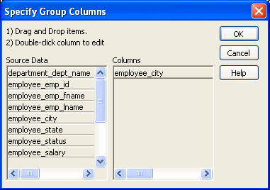
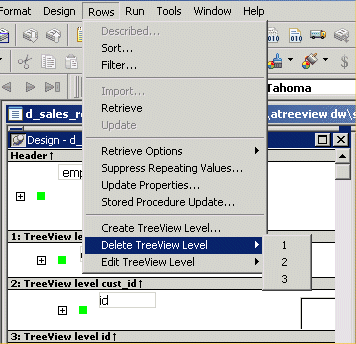

You add and delete TreeView levels using the Rows menu in the DataWindow painter.
 To create an additional level in a TreeView DataWindow:
To create an additional level in a TreeView DataWindow:
Open the TreeView DataWindow if it is not already open.
Select Rows>Create TreeView Level from the menu bar.
The Specify Group Columns dialog box displays.
Specify the columns you want to set as the next TreeView level by dragging them from the Source Data pane to the Columns pane.
In the sample DataWindow shown in "Example", the second level has a single column, the employee_city column.

Click OK.
The new TreeView level and a Trailer band for that level are created in the TreeView Design view. For information on how to set properties for a TreeView level, see "Setting TreeView level properties".
 To delete a level in a TreeView DataWindow:
To delete a level in a TreeView DataWindow:
Select Rows>Delete TreeView Level from the menu bar.

Select the number of the level to delete from the list of levels that displays.
The level in the TreeView DataWindow is deleted immediately.
 If you delete a level by mistake If you unintentionally delete a level, close the TreeView DataWindow without
saving changes, then reopen it and continue working.
If you delete a level by mistake If you unintentionally delete a level, close the TreeView DataWindow without
saving changes, then reopen it and continue working.